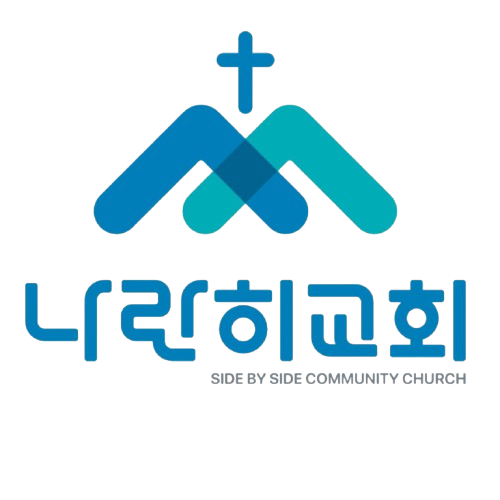

\
나란히교회
나란히교회
| Side by Side
홈
교회 소개
최근 예배
최근 예배
오시는 길

[2026 VISION]
“하나님을 기뻐하는 삶”
하나님을 기뻐하고 가장 만족할 때,
하나님께서 가장 큰 영광을 받으십니다.
예배 안내
수요일
저녁 8시 /
금요기도회
저녁 8시 /
주일
오전 11시
“하나님을 기뻐하라.”
— 시편 37:4
“두 사람이 동행하려면 뜻이 같아야 하지 아니하겠느냐.”
— 아모스 3:3
“서로 사랑하라.”
— 요한복음 13:34
교회 소개
2022년 설립된 나란히교회는
대한예수교 장로회(백석) 서울노회 소속입니다.
“복음을 전하고 삶으로 예배하는
공동체가 되길 소망합니다.”
담임목사
이휘범
최근 예배
최근 예배
오시는 길
서울특별시 도봉구 노해로 178, 지하
N
네이버 지도로 길찾기
▶
라이브 예배 참가